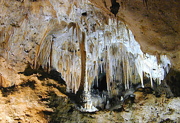
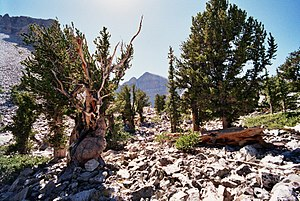
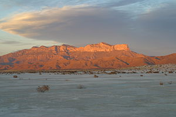
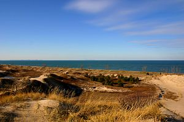

U.S. National Parks Alphabetically
A
Acadia
Covering most of Mount Desert Island and other coastal islands, Acadia features the tallest mountain on the Atlantic coast of the United States, granite peaks, ocean shoreline, woodlands, and lakes. There are freshwater, estuary, forest, and intertidal habitats. Some hikes include precipice trail, beehive trail, and Cadillac Loop Trail.
American Samoa
The southernmost national park is on three Samoan islands and protects coral reefs, rainforests, volcanic mountains, and white beaches. The area is also home to flying foxes, brown boobies, sea turtles, and 900 species of fish. Some hikes include Tuafanua Trail, Lower Sauma Ridge Trail, and Tumu Mountain Trail.
Arches
This site features more than 2,000 natural sandstone arches, with some of the most popular arches in the park being Delicate Arch, Landscape Arch and Double Arch.[15] Millions of years of erosion have created these structures located in a desert climate where the arid ground has life-sustaining biological soil crusts and potholes that serve as natural water-collecting basins. Other geologic formations include stone pinnacles, fins, and balancing rocks. Some hikes inclue Devil's Garden Primitive Loop, Double Arch, and Park Avenue.
B
Badlands
The Badlands are a collection of buttes, pinnacles, spires, and mixed-grass prairies. The White River Badlands contain the largest assemblage of known late Eocene and Oligocene mammal fossils.[17] The wildlife includes bison, bighorn sheep, black-footed ferrets, and prairie dogs.
Big Bend
Named for the prominent bend in the Rio Grande along the U.S.–Mexico border, this park encompasses a large and remote part of the Chihuahuan Desert. Its main attraction is backcountry recreation in the arid Chisos Mountains and in canyons along the river. A wide variety of Cretaceous and Tertiary fossils as well as cultural artifacts of Native Americans also exist within its borders.
Biscayne
Located in Biscayne Bay, this park at the north end of the Florida Keys has four interrelated marine ecosystems: mangrove forest, the Bay, the Keys, and coral reefs. Threatened animals include the West Indian manatee, American crocodile, various sea turtles, and peregrine falcon.
Black Canyon
The park protects a quarter of the Gunnison River, which slices sheer canyon walls from dark Precambrian-era rock. The canyon features some of the steepest cliffs and oldest rock in North America, and is a popular site for river rafting and rock climbing. The deep, narrow canyon is composed of gneiss and schist which appears black when in shadow.
Bryce Canyon

Bryce Canyon is a geological amphitheater on the Paunsaugunt Plateau with hundreds of tall, multicolored sandstone hoodoos formed by erosion. The region was originally settled by Native Americans and later by Mormon pioneers.
C
Canyonlands
This landscape was eroded into a maze of canyons, buttes, and mesas by the combined efforts of the Colorado River, Green River, and their tributaries, which divide the park into three districts. The park also contains rock pinnacles and arches, as well as artifacts from Ancient Pueblo peoples.
Capitol Reef
The park's Waterpocket Fold is a 100-mile (160 km) monocline that exhibits the earth's diverse geologic layers. Other natural features include monoliths, cliffs, and sandstone domes shaped like the United States Capitol.
Carlsbad Caverns
Carlsbad Caverns has 117 caves, the longest of which is over 120 miles (190 km) long. The Big Room is almost 4,000 feet (1,200 m) long, and the caves are home to over 400,000 Mexican free-tailed bats and sixteen other species. Above ground are the Chihuahuan Desert and Rattlesnake Springs.
Channel Islands
Five of the eight Channel Islands are protected, with half of the park's area underwater. The islands have a unique Mediterranean ecosystem originally settled by the Chumash people. They are home to over 2,000 species of land plants and animals, 145 endemic to them, including the island fox. Ferry services offer transportation to the islands from the mainland.
Congaree
On the Congaree River, this park is the largest portion of old-growth floodplain forest left in North America. Some of the trees are the tallest in the eastern United States. An elevated walkway called the Boardwalk Loop guides visitors through the swamp
Crater Lake
Crater Lake lies in the caldera of an ancient volcano called Mount Mazama that collapsed 7,700 years ago. The lake is the deepest in the United States and is noted for its vivid blue color and water clarity. Wizard Island and the Phantom Ship are more recent volcanic formations within the caldera. As the lake has no inlets or outlets, the lake is replenished only by precipitation.
Cuyahoga Valley
This park along the Cuyahoga River has waterfalls, hills, trails, and exhibits on early rural living. The Ohio and Erie Canal Towpath Trail follows the Ohio and Erie Canal, where mules towed canal boats. The park has numerous historic homes, bridges, and structures,[33] and also offers a scenic train ride.[
D
Death Valley

Death Valley is the hottest, lowest, and driest place in the United States, with daytime temperatures that have exceeded 130 °F (54 °C). The park protects Badwater Basin and its vast salt flats located at the lowest elevation in North America, −282 ft (−86 m).[35] The park also protects canyons, badlands, sand dunes, mountain ranges, historic mines, springs, and more than 1000 species of plants which grow in this geologic graben.
Denali
Centered on Denali, the tallest and highest prominence mountain in North America, Denali is serviced by a single road leading to Wonder Lake. Denali and other peaks of the Alaska Range are covered with long glaciers and boreal forest. Wildlife includes grizzly bears, Dall sheep, Porcupine caribou, and wolves.
Dry Tortuga
The islands of the Dry Tortugas, at the westernmost end of the Florida Keys, are the site of Fort Jefferson, a Civil War-era fort that is the largest masonry structure in the Western Hemisphere. The park is home to undisturbed coral reefs and shipwrecks, and is only accessible by plane or boat.
E
Everglades
The Everglades are the largest tropical wilderness in the United States. This mangrove and tropical rainforest ecosystem and marine estuary is home to 36 protected species, including the Florida panther, American crocodile, and West Indian manatee. Some areas have been drained and developed; restoration projects aim to restore the ecology.
G
Gates of the Arctic
The country's northernmost park protects an expanse of pure wilderness in Alaska's Brooks Range and has no park facilities. The land is home to Alaska Natives who have relied on the land and caribou for 11,000 years.
Gateway Arch
The Gateway Arch is a 630-foot (192 m) (both high and wide) catenary arch built to commemorate the Lewis and Clark Expedition, initiated by Thomas Jefferson, and the subsequent westward expansion of the country. The nearby Old Courthouse, across a greenway to the west of the arch, was the first site of the Dred Scott case about slavery. A museum, located in the underground visitor center below the arch, describes the arch's construction and the country's westward expansion.
Glacier
The U.S. half of Waterton-Glacier International Peace Park, this park includes 26 glaciers and 130 named lakes surrounded by Rocky Mountain peaks. There are historic hotels and a landmark road called the Going-to-the-Sun Road in this region of rapidly receding glaciers.[47] The local mountains, formed by an overthrust, expose Paleozoic fossils including trilobites, mollusks, giant ferns and dinosaurs.[48] (WHS)[49] (BR)[50] The park is also home to Triple Divide Peak, which forms the boundary between the watersheds of the Atlantic, Pacific, and Arctic Oceans.
Glacier Bay
Glacier Bay contains tidewater glaciers, mountains, fjords, and a temperate rainforest, and is home to large populations of grizzly bears, mountain goats, whales, seals, and eagles. When discovered in 1794 by George Vancouver, the entire bay was covered by ice, but the glaciers have since receded more than 65 miles (105 km).
Grand Canyon
The Grand Canyon, carved by the mighty Colorado River, is 277 miles (446 km) long, up to 1 mile (1.6 km) deep, and up to 15 miles (24 km) wide. Millions of years of erosion have exposed the multicolored layers of the Colorado Plateau in mesas and canyon walls, visible from both the north and south rims, or from a number of trails that descend into the canyon itself.
Grand Teton
Grand Teton is the tallest mountain in the Teton Range. The park's historic Jackson Hole and reflective piedmont lakes teem with endemic wildlife, with a backdrop of craggy mountains that rise abruptly from the sage-covered valley.
Great Basin
Based around Nevada's second tallest mountain, Wheeler Peak, Great Basin National Park contains 5,000-year-old bristlecone pines, a rock glacier, and the limestone Lehman Caves. Due to its remote location, the park has some of the country's darkest night skies. Wildlife includes the Townsend's big-eared bat, pronghorn, and Bonneville cutthroat trout.
Great Sand Dunes
The tallest sand dunes in North America, up to 750 feet (230 m) tall, were formed by deposits of the ancient Rio Grande in the San Luis Valley. Abutting a variety of grasslands, shrublands, and wetlands, the park also has alpine lakes, six 13,000-foot mountains, and old-growth forests.
Great Smoky Mountains
The Great Smoky Mountains, part of the Appalachian Mountains, span a wide range of elevations, making them home to over 400 vertebrate species, 100 tree species, and 5000 plant species. Hiking is the park's main attraction, with over 800 miles (1,300 km) of trails, including 70 miles (110 km) of the Appalachian Trail. Other activities include fishing, horseback riding, and touring nearly 80 historic structures.
Guadalupe Mountains
This park contains Guadalupe Peak, the highest point in Texas, as well as the scenic McKittrick Canyon filled with bigtooth maples, a corner of the arid Chihuahuan Desert, and a fossilized coral reef from the Permian era
H
Haleakalā
The Haleakalā volcano on Maui features a very large crater with numerous cinder cones, Hosmer's Grove of alien trees, the Kipahulu section's scenic pools of freshwater fish, and the native Hawaiian goose. The park protects the greatest number of endangered species within a U.S. National Park.
Hawaiʻi Volcanoes
This park on the Big Island protects the Kīlauea and Mauna Loa volcanoes, two of the world's most active geological features. Diverse ecosystems range from tropical forests at sea level to barren lava beds at more than 13,000 feet (4,000 m).
Hot Springs
Hot Springs was established as a federal reserve by Congress on April 20, 1832—the oldest area managed by the National Park Service. Congress redesignated Hot Springs as a national park on March 4, 1921. Natural hot springs flow out of the Ouachita Mountains, providing opportunities for relaxation in a historic setting. Bathhouse Row preserves numerous examples of 19th-century architecture.[67] Hot Springs is the first national park in a city and was the smallest national park until February 22, 2018 when the Jefferson National Expansion Memorial was redesignated Gateway Arch National Park.
I
Indiana Dunes
Previously designated a national lakeshore, the dunes run for nearly 25 miles (40 km) along the southern shore of Lake Michigan. The sandy beach adjoins a grassy prairie, bog, and wetlands home to over 2,000 species.
Isle Royale
The largest island in Lake Superior is a place of isolation and wilderness. Along with its many shipwrecks, waterways, and hiking trails, the park also includes over 400 smaller islands within 4.5 miles (7.2 km) of its shores. There are only 20 mammal species on the entire island, though the relationship between its wolf and moose populations is especially unique.
J
Joshua Tree
Covering large areas of the Colorado and Mojave Deserts and the Little San Bernardino Mountains, this desert landscape is populated by vast stands of Joshua trees. Large changes in elevation reveal various contrasting environments including bleached sand dunes, dry lakes, rugged mountains, and maze-like clusters of monzogranite monoliths.
K
Katmai
This park on the Alaska Peninsula protects the Valley of Ten Thousand Smokes, an ash flow formed by the 1912 eruption of Novarupta, as well as Mount Katmai. Over 2,000 grizzly bears come here each year to catch spawning salmon. Other wildlife includes caribou, wolves, moose, and wolverines.
Kenai Fjords
Near Seward on the Kenai Peninsula, this park protects the Harding Icefield and at least 38 glaciers and fjords stemming from it. The only area accessible to the public by road is Exit Glacier; the rest must be viewed or reached from boat tours.
Kings Canyon
Home to several giant sequoia groves and the General Grant Tree, the world's second largest measured tree, this park also features part of the Kings River, sculptor of the dramatic granite canyon that is its namesake, and the San Joaquin River, as well as Boyden Cave.[75] Although Kings Canyon National Park was designated as such in 1940, it subsumed General Grant National Park, which had been established on October 1, 1890 as the United States' fourth national park.
Kobuk Valley
Kobuk Valley protects 61 miles (98 km) of the Kobuk River and three regions of sand dunes. Created by glaciers, the Great Kobuk, Little Kobuk, and Hunt River Sand Dunes can reach 100 feet (30 m) high and 100 °F (38 °C), and they are the largest dunes in the Arctic. Twice a year, half a million caribou migrate through the dunes and across river bluffs that expose well-preserved ice age fossils.
L
Lake Clark
The region around Lake Clark features four active volcanoes, including Mount Redoubt, as well as an abundance of rivers, glaciers, and waterfalls. Temperate rainforests, a tundra plateau, and three mountain ranges complete the landscape.
Lassen Volcanic
Lassen Peak, the largest lava dome volcano in the world, is joined by all three other types of volcanoes in this park: shield, cinder cone, and composite. Though Lassen itself last erupted in 1915, most of the rest of the park is continuously active. Numerous hydrothermal features, including fumaroles, boiling pools, and bubbling mud pots, are heated by molten rock from beneath the peak.
M
Mammoth Cave
With more than 400 miles (640 km) of passageways explored, Mammoth Cave is the world's longest known cave system. Subterranean wildlife includes eight bat species, Kentucky cave shrimp, Northern cavefish, and cave salamanders. Above ground, the park provides recreation on the Green River, 70 miles of hiking trails, and plenty of sinkholes and springs.
Mesa Verde
This area constitutes over 4,000 archaeological sites of the Ancestral Puebloan people, who lived here and elsewhere in the Four Corners region for at least 700 years. Cliff dwellings built in the 12th and 13th centuries include Cliff Palace, which has 150 rooms and 23 kivas, and the Balcony House, with its many passages and tunnels.
Mount Rainier
Mount Rainier, an active stratovolcano, is the most prominent peak in the Cascades and is covered by 26 named glaciers including Carbon Glacier and Emmons Glacier, the largest in the contiguous United States. The mountain is popular for climbing, and more than half of the park is covered by subalpine and alpine forests and meadows seasonally in bloom with wildflowers. Paradise on the south slope is the snowiest place on Earth where snowfall is measured regularly.[88] The Longmire visitor center is the start of the Wonderland Trail, which encircles the mountain.
N
North Cascades
This complex includes two geographically distinct units of the national park, as well as Ross Lake and Lake Chelan National Recreation Areas. The highly glaciated mountains are spectacular examples of Cascade geology. Popular hiking and climbing areas include Cascade Pass, Mount Shuksan, Mount Triumph, and Eldorado Peak.
O
Olympic
Situated on the Olympic Peninsula, this park includes a wide range of ecosystems from Pacific shoreline to temperate rainforests to the alpine slopes of the Olympic Mountains, the tallest of which is Mount Olympus. The Hoh Rainforest and Quinault Rainforest are the wettest area in the contiguous United States, with the Hoh receiving an average of almost 12 ft (3.7 m) of rain every year.
P
Petrified Forest
This portion of the Chinle Formation has a large concentration of 225-million-year-old petrified wood. The surrounding Painted Desert features eroded cliffs of red-hued volcanic rock called bentonite. Dinosaur fossils and over 350 Native American sites are also protected in this park.
Pinnacles
Named for the eroded leftovers of a portion of an extinct volcano, the park's massive black and gold monoliths of andesite and rhyolite are a popular destination for rock climbers. Hikers have access to trails crossing the Coast Range wilderness. The park is home to the endangered California condor (Gymnogyps californianus) and one of the few locations in the world where these extremely rare birds can be seen in the wild. Pinnacles also supports a dense population of prairie falcons, and more than 13 species of bat which populate its talus caves.
R
Redwood
This park and the co-managed state parks protect almost half of all remaining coastal redwoods, the tallest trees on earth. There are three large river systems in this very seismically active area, and 37 miles (60 km) of protected coastline reveal tide pools and seastacks. The prairie, estuary, coast, river, and forest ecosystems contain a wide variety of animal and plant species.
Rocky Mountains
Bisected north to south by the Continental Divide, this portion of the Rockies has ecosystems varying from over 150 riparian lakes to montane and subalpine forests to treeless alpine tundra. Wildlife including mule deer, bighorn sheep, black bears, and cougars inhabit its igneous mountains and glacial valleys. Longs Peak, a classic Colorado fourteener, and the scenic Bear Lake are popular destinations, as well as the historic Trail Ridge Road, which reaches an elevation of more than 12,000 feet (3,700 m).
S
Saguaro
Split into the separate Rincon Mountain and Tucson Mountain districts, this park is evidence that the dry Sonoran Desert is still home to a great variety of life spanning six biotic communities. Beyond the namesake giant saguaro cacti, there are barrel cacti, chollas, and prickly pears, as well as lesser long-nosed bats, spotted owls, and javelinas.
Sequoia
This park protects the Giant Forest, which boasts some of the world's largest trees, the General Sherman being the largest measured tree in the park. Other features include over 240 caves, a long segment of the Sierra Nevada including the tallest mountain in the contiguous United States, and Moro Rock, a large granite dome.
Shenandoah
Shenandoah's Blue Ridge Mountains are covered by hardwood forests that teem with a wide variety of wildlife. The Skyline Drive and Appalachian Trail run the entire length of this narrow park, along with more than 500 miles (800 km) of hiking trails passing scenic overlooks and cataracts of the Shenandoah River.
T
Theodore Roosevelt
This region that enticed and influenced President Theodore Roosevelt consists of a park of three units in the northern badlands. Besides Roosevelt's historic cabin, there are numerous scenic drives and backcountry hiking opportunities. Wildlife includes American bison, pronghorn, bighorn sheep, and wild horses.
V
Virgin Islands
This island park on Saint John preserves Taíno archaeological sites and the ruins of sugar plantations from Columbus's time, as well as all the natural environs. Surrounding the pristine beaches are mangrove forests, seagrass beds, and coral reefs.
Voyageurs
This park protecting four lakes near the Canada–US border is a site for canoeing, kayaking, and fishing. The park also preserves a history populated by Ojibwe Native Americans, French fur traders called voyageurs, and gold miners. Formed by glaciers, the region features tall bluffs, rock gardens, islands, bays, and several historic buildings.
W
White Sands
Located in the mountain-ringed Tularosa Basin, White Sands consists of the southern part of a 275-square-mile (710 km2) field of white sand dunes composed of gypsum crystals—the world's largest gypsum dunefield. The park is completely within the White Sands Missile Range and is subject to closure when tests are conducted.
Wind Cave
Wind Cave is distinctive for its calcite fin formations called boxwork, a unique formation rarely found elsewhere, and needle-like growths called frostwork. The cave is one of the longest and most complex caves in the world. Above ground is a mixed-grass prairie with animals such as bison, black-footed ferrets, and prairie dogs, and ponderosa pine forests that are home to cougars and elk.[109] The cave is culturally significant to the Lakota people as the site "from which Wakan Tanka, the Great Mystery, sent the buffalo out into their hunting grounds.
Wrangell - St. Elias
An over 8 million acres (32,375 km2) plot of mountainous country—the largest national park in the system—protects the convergence of the Alaska, Chugach, and Wrangell-Saint Elias Ranges, which include many of the continent's tallest mountains and volcanoes, including the 18,008-foot Mount Saint Elias. More than a quarter of the park is covered with glaciers, including the tidewater Hubbard Glacier, piedmont Malaspina Glacier, and valley Nabesna Glacier.
Y
Yellowstone
Situated on the Yellowstone Caldera, the park has an expansive network of geothermal areas including boiling mud pots, vividly colored hot springs such as Grand Prismatic Spring, and regularly erupting geysers, the best-known being Old Faithful. The yellow-hued Grand Canyon of the Yellowstone River contains several high waterfalls, and four mountain ranges traverse the park. More than 60 mammal species including timber wolves, grizzly bears, black bears, lynxes, bison, and elk, make this park one of the best wildlife viewing spots in the country.
Yosemite
Yosemite features sheer granite cliffs, exceptionally tall waterfalls, and old-growth forests at a unique intersection of geology and hydrology. Half Dome and El Capitan rise from the park's centerpiece, the glacier-carved Yosemite Valley, and from its vertical walls drop Yosemite Falls, one of North America's tallest waterfalls at 2,425 feet (739 m) high. Three giant sequoia groves, along with a pristine wilderness in the heart of the Sierra Nevada, are home to a wide variety of rare plant and animal species.
Z
Zion
Located at the junction of the Colorado Plateau, Great Basin, and Mojave Desert, this park contains sandstone features such as mesas, rock towers, and canyons, including the Virgin River Narrows. The various sandstone formations and the forks of the Virgin River create a wilderness divided into four ecosystems: desert, riparian, woodland, and coniferous forest.